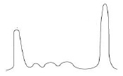
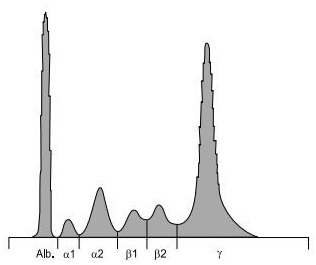
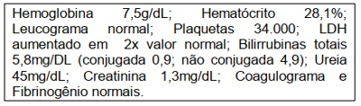
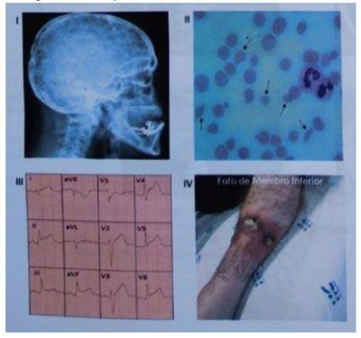
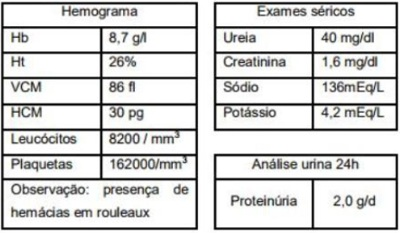
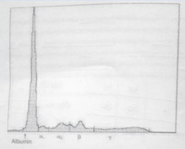
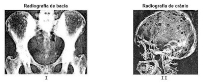
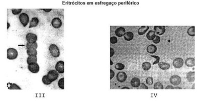
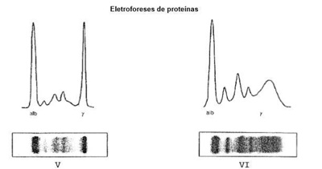
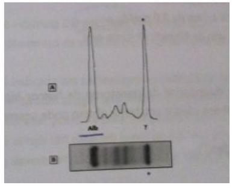

Questão 1 · Quadro Clínico do mieloma múltiplo MM · 4000169300Homem de 60 anos, diabético, com quadro de fraqueza e astenia há 1 mês. Com dor progressiva de região lombar e braço direito. Na última semana apresentou constipação e confusão mental, evoluindo com sonolência há 2 dias. Foi levado pelos familiares a unidade básica de saúde onde os seguintes exames foram realizados: Hb: 8,1g/dL; Ht: 25%; Leucócitos: 7.800/mm³; Plaquetas: 160.000/mm³; VCM: 85; HCM: 30; Ureia: 88mg/dL; Creatinina: 2,0mg/dL; Albumina: 3,0g/dL; Glicose: 98mg/dL; Sódio: 135mEq/L; Cloro: 110mEq/L; Gasometria: pH/PCO₂/HCO₃; 7,20/35/18. Urina I: pH: 6,0;Densidade: 1030; Proteínas: 2+/4+; Glicose: 1+/4+; Leucócitos: 1/campo; Hemácias: 2/campo; Qual a principal hipótese diagnóstica?
A Mieloma múltiplo.
B Síndrome de Sjogren.
C Intoxicação por metformina.
D Glomerulonefrite rapidamente progressiva.
Questão 2 · Fisiopatologia do mieloma múltiplo MM · Hematologia · Quadro Clínico do mieloma múltiplo MM · 4000168772Mulher de 76 anos apresenta emagrecimento, dor lombar, astenia e dispneia aos esforços. Desconhece comorbidades prévias, nega tabagismo etilismo ou uso de medicamentos. Ao exame, as mucosas estão descoradas; sem outras anormalidades. Exames de laboratório: Hb 7,3g/dL; LG 6.500/mm³; Plq 112.000/mm³; VHS 95mm na primeira hora; creatinina 2,2mg/dL; Ureia 47mg/dL; cálcio total 10,6g/dL; albumina serica 2,0g/dL; LDH 450Ul/L; BT 0,9mg/dL. A hematoscopia revelou o seguinte achado: Considerando o diagnóstico mais provável para essa paciente, assinale a alternativa que apresenta o(s) exame(s) MAIS ADEQUADO(S) a ser(em) solicitado(s) nesse momento:

A Eletroforese de proteínas séricas e urinárias.
B Endoscopias do trato digestivo alto e baixo.
C Pesquisa do cromossomo Philadelphia.
D Teste de fragilidade osmótica de eritrócitos.
Questão 3 · Quadro Clínico do mieloma múltiplo MM · 4000166574Um paciente com mieloma múltiplo recém diagnosticado, mas ainda virgem de tratamento, dá entrada no pronto-socorro com o seguinte quadro: rebaixamento do nível de consciência, desidratação, distensão abdominal e redução dos ruídos hidroaéreos e insuficiência renal aguda. Familiar relata que o quadro teve evolução progressiva nos últimos dias, sendo que, no início, o paciente estava apresentando diurese muito abundante, que posteriormente se reduziu, associado ao agravamento dos outros sintomas. Qual é a provável etiologia do quadro?
A Síndrome de lise tumoral.
B Metástase para o sistema nervoso central.
C Hipercalcemia.
D Síndrome de hiperviscosidade.
Questão 4 · Hematologia · Gamopatias monoclonais · 4000166369Qual dessas doenças não faz parte do grupo de gamopatias monoclonais?
A Síndrome POEMS.
B Agamaglobulinemia ligada ao X.
C Amiloidose de cadeias leves.
D Macroglogulinemia de Waldenström.
Questão 5 · Quadro Clínico do mieloma múltiplo MM · 4000164377Paciente de 68 anos, sexo feminino, procura o posto de saúde por quadro de dor lombar há 6 meses associada a fadiga e adinamia. Refere piora da dor durante o passar do dia e nega melhora com uso de anti-inflamatórios não esteroidais. Antecedente de hipertensão, dislipidemia e hipotireoidismo. Traz exames laboratoriais com Hb: 8,0 g/dL, Cr: 2,5 mg/dL, Cai 6,5 mg/dL. USG de vias urinárias com rins de tamanho preservados. Submetida a biópsia renal que evidenciou cilindros eosinofílicos. Dentre as opções abaixo, o achado mais provável no sangue periférico deste paciente é
A Agregados lineares de células vermelhas.
B Reticulócitos aumentados.
C Leucocitose com células mieloides maduras.
D Manchas de Gumprecht.
Questão 6 · Classif icação do mieloma múltiplo MM · 4000145733Homem de 65 anos procura o consultório médico referindo progressiva fadiga nos últimos 6 meses. Traz estes exames realizados há 30 dias: Hemoglobina: 9 g/dL Creatinina: 2,5 mg/dL Eletroforese de proteínas: Qual o provável diagnóstico?

A Gamopatia monoclonal de significado incerto (MIGUS).
B Macroglobulinemia de Waldenstrom.
C Mieloma múltiplo.
D Amiloidose.
E Sepse urinária.
Questão 7 · Mieloma múltiplo MM · 4000144702Homem, 71 anos de idade, com antecedente de hepatite autoimune em uso de azatioprina e prednisona, refere fadiga e dispneia aos médios esforços, sem outros sintomas. Na investigação clínica uma eletroforese de proteínas demonstrou componente monoclonal em fração de gamaglobulinas (39/dL) e a imuno xação evidenciou ser de IgG kappa. Quais exames devem ser solicitados para elucidação diagnóstica neste primeiro momento?
A Biópsia da medula óssea com imuno-histoquímica.
B Hemograma, creatinina, cálcio sérico, função hepática e mielograma.
C Elastografia hepática, biópsia hepática e de medula óssea.
D Hemograma, albumina, B2-microglobulina e elastografia hepática.
Questão 8 · Quadro Clínico do mieloma múltiplo MM · 4000143758No mieloma múltiplo,
A hipercalcemia, eventualmente observada, seria secundária à insuficiência renal aguda.
B sem proteinúria, não há risco para desenvolvimento de insuficiência renal aguda.
C há predisposição a infecções por bactérias encapsuladas devido imunodeficiência humoral predominante.
D o principal achado do hemograma é a presença de plasmócitos.
Questão 10 · Hematologia · Quadro Clínico do mieloma múltiplo MM · 4000138380Rouleaux eritrocitário, anemia, pico de gamaglobulina em eletroforese de proteínas séricas, proteinúria, o diagnóstico mais provável:
A Crioglobulinemia;
B Leucemia Linfocitica Crônica;
C Cirrose biliar primária;
D Mieloma Múltiplo;
E Insuficiência renal Crônica;
Questão 11 · Amiloidose · Amiloidose · 4000133919Em relação à amiloidose, analise as afirmativas a seguir: I. As manifestações podem incluir neuropatia periférica motora e sensorial, cardiomiopatia, síndrome nefrótica, síndrome de mal absorção e insuficiência hepática. II. Os sintomas e sinais, muito variados e insidiosos, podem também se manifestar através de demência, hipoacusia, tosse crônica por infecções respiratórias recorrentes acarretando diagnóstico tardio. III. Pacientes com diagnóstico de amiloidose possuem indicação de transplante de medula óssea autólogo; porém, pacientes com acometimento cardíaco grave não devem realizar o transplante de medula. Estão corretas as afirmativas
A I e II, apenas.
B I e III, apenas.
C II e III, apenas.
D I, II e III.
Questão 12 · Quadro Clínico da amiloidose · Nef rologia · Patologia da amiloidose · 4000131277Pacientes com diagnóstico de mieloma múltiplo, que apresentam depósitos no rim de proteínas com características de fibrilas amiloide do tipo AL e coradas com vermelho congo. Esses pacientes apresentam clinicamente com mais frequência:
A acidose tubular renal.
B lesão renal aguda.
C doença renal crônica.
D síndrome nefrótica.
Questão 13 · Classif icação do mieloma múltiplo MM · Hematologia · 4000131273Leia o caso clínico a seguir. Paciente de 72 anos, do sexo feminino, assintomática, em exame de rotina notado com pico monoclonal de 3,8 g/dL em gamaglobulina. Apresenta creatinina sérica de 1,4 mg/dL, cálcio sérico de 8,1 mg/dL, tomogra a de corpo todo de baixa intensidade normal, mielograma com infiltração plasmocitária de 18%, relação de cadeias leves livres kappa / lambda: 120. Segundo o International
A síndrome de POEMS.
B pico monoclonal de significado indeterminado.
C mieloma múltiplo indolente.
D mieloma múltiplo ativo.
Questão 14 · Hematologia · Quadro Clínico do mieloma múltiplo MM · 4000127336Paciente, 72 anos, sexo masculino, comparece ao ambulatório de Clínica Médica com queixa de dores ósseas difusas, particularmente na coluna. Ao exame físico, apresenta-se algo hipocorado e com fácies de dor. Traz alguns exames laboratoriais: Hemoglobina 11,2g/dl (VR: 13-16 g/dl) Cálcio iônico 1,5mmol/L (VR: 1,15-1,32mmol/L) Creatinina 1,6mg/dl (VR: 0,8-1,2mg/dl) Fosfatase alcalina 64U/L (VR: 50-200U/L), além de radiogra as da coluna evidenciando lesões osteolíticas difusas. LEGENDA: VR: valor de referência. Considerando a principal hipótese diagnóstica, qual dos exames a seguir deve ser solicitado?
A PSA total
B Cintilografia óssea.
C Densitometria mineral óssea.
D Eletroforese de proteínas séricas
Questão 15 · Gamopatias monoclonais · 4000125747Mulher de 72 anos apresenta quadro de dor em região dorsal (torácica e lombar) e em membros, especialmente em tornozelos e antebraços, há pelo menos dois meses, de caráter progressivo. Nega febre, mas refere cansaço no último mês. Apresenta-se bastante descorada ao exame físico, hidratada e anictérica. Não há baço palpável ou adenomegalias. Hb 6,5g/dL; VCM 92fL; GB 6.400 com 60% de segmentados, linfócitos 28%, plaquetas 390.000/uL. VHS 145mm na primeira hora. Creatinina 2,5mg%; ureia 65mg%; sódio 145mEq/L; potássio 4,9mEq/L. Qual dos exames é mais resolutivo quanto ao diagnóstico da paciente?
A Ressonância de coluna dorsal.
B Proteinúria de Bence Jones.
C Fator reumatoide.
D P-ANCA e c-ANCA.
E Eletroforese de proteínas do soro.
Questão 16 · Fisiopatologia do mieloma múltiplo MM · 4000113097O acometimento ósseo pelo mieloma múltiplo - MM da doença com lesões líticas que afetam predominantemente o esqueleto do crânio, coluna e gradil costal e as áreas proximais dos membros superiores e inferiores. O item com erro é:
A As lesões ósseas resultam do aumento da atividade osteoblástica (reabsorção óssea, acompanhada pela exaustão da função osteoblástica e aumento da formação óssea.
B Na avaliação radiológica inicial, quase 80% dos pacientes terão lesões líticas no esqueleto, acometendo vértebras, arcos costais, crânio, ombros, pelve e ossos longos.
C Quase 10% dos doentes têm osteopenia difusa ou osteoporose ao diagnóstico.
D Apesar de geralmente diagnosticadas em radiografias, as lesões líticas só aparecem quando já se perdeu acima de 30% do trabeculado ósseo.
Questão 17 · Fisiopatologia do mieloma múltiplo MM · Quadro Clínico do mieloma múltiplo MM · 4000110612Homem, 67 anos, iniciou investigação de anemia normocítica e normocômica e redução da taxa de ltração glomerular, detectadas em exame de rotina. Comparece à consulta com o seguinte gráfico de eletroforese de proteínas: Qual distúrbio hidroeletrolítico está associado à doença em questão?

A Hipopotassemia.
B Hipercalcemia.
C Hiponatremia.
D Hipernatremia.
E Hipocalcemia.
Questão 18 · Hipercalcemia maligna · Tratamento do mieloma múltiplo MM · Quadro Clínico do mieloma múltiplo MM · 4000107922Paciente, 71 anos, masculino, deu entrada no PA com queda do quadro geral, desidratação, aumento das escórias nitrogenadas, anemia normocítica e normocrômica. Raio X do tórax evidenciou múltiplas lesões líticas nos arcos costais. Aventou-se a hipótese de mieloma múltiplo. Qual o principal distúrbio eletrolítico encontrado nessa patologia?
A Hipernatremia
B Hipocalemia
C Hipercalemia
D Hipocalcemia
E Hipercalcemia
Questão 19 · Classif icação do mieloma múltiplo MM · 4000103427Homem com 50 anos de idade relata que há 6 meses tem dor lombar de forte intensidade com diversas idas ao prontosocorro, sendo medicado com anti-inflamatórios (AINH), com alívio parcial. Trouxe os seguintes exames: HB: 9,2 g/dL; Ht: 28%; VCM: 86 fL; HCM 32 pg. Leucócitos: 4.500/mm3 e plaquetas 250.000/mm3. Cr: 2,5 mg/dL; ureia: 85 mg/dL; TGO: 32 e TGP: 35. RX de coluna lombar com fraturas de acunhamento de L2 e L3. O diagnóstico mais provável e exames prudentes para investigação são, respectivamente:
A Anemia ferropriva pelo uso de AINH; perfil de ferro e endoscopia.
B Anemia de doença crônica por insuficiência renal associado ao uso de anti-inflamatórios; perfil de ferro.
C Mieloma múltiplo; eletroforese de proteínas séricas e urinárias e avaliação da medula óssea
D Mieloma múltiplo; proteinúria de Bence-Jones e cintilografia óssea.
Questão 20 · Classif icação das gamopatias monoclonais · 4000100474Idosa, 78 anos, durante avaliação por geriatra teve exame mostrando elevação de cálcio e anemia. O pro ssional prosseguiu com investigação e encontrou em radiogra as de pelve alterações ósseas compatíveis com lesões líticas e na imunoeletroforese evidenciou monoclonalidade IgG-kappa. Sobre o diagnóstico provável pode-se inferir que:

A O achado de plasmocitose em medula óssea confirma o diagnóstico de mieloma múltiplo.
B Os exames sugerem câncer de ovário avançado e a próxima intervenção deve ser a laparotomia.
C A idosa é portadora de gamopatia monoclonal de significado indeterminado.
D Trata-se de caso grave de osteoporose e é necessária urgentemente a intervenção com bisfosfonato.
Questão 21 · Quadro Clínico do mieloma múltiplo MM · 4000076671Homem de 70 anos, com história de dor lombar progressiva com piora à movimentação, associada a emagrecimento, apresenta Lasegue positivo à direita, astenia e fraqueza de início há dois meses. Os exames mostram hemoglobina = 9g/dL, leucócitos = 9.000/mm³, diferencial normal, plaquetas = 200.000/mm³, glicose = 90mg/dL, creatinina = 1,1mg/dL, proteína total = 7,5g/dL, albumina = 3,0g/dL, VHS = 110mm/hora, ácido úrico = 7,5mg/dL, fosfatase alcalina = 120U/L, cálcio = 10,5mg/dL e fósforo = 3,5mg/dL. O exame de imagem da coluna revela intensa osteopenia sem lesões líticas e PSA = 9,5ng/mL. O paciente é tabagista de 40 maços-ano e etilista social. A hipótese diagnóstica principal é de:
A mieloma múltiplo
B tumor de próstata metastático
C osteoporose secundária a hipogonadismo
D metástases na coluna por tumor epidermoide de pulmão
Questão 22 · Quadro Clínico da Macroglobulinemia de Waldenström MW · 4000063682Patologia da Macroglobulinemia de Waldenström MW A macroglobulinemia de Waldestron está associada à síndrome de hiperviscosidade. Os principais componentes da síndrome são
A Turvação visual, cefaleia e parestesias.
B Vômitos, náuseas e icterícia.
C Diarreia, palpitação e tonteira.
D Hipofonese de bulhas, hipotensão e bradicardia.
E Hipertensão, bradicardia e alterações do ritmo respiratório.
Questão 23 · Classif icação do mieloma múltiplo MM · 4000041829No mieloma múltiplo - MM, plasmócitos monoclonais geralmente representam mais de 10% das células nucleadas da medula óssea; no entanto 4% dos pacientes com MM sintomático têm plasmocitose abaixo de 10%. Não podemos aceitar que:
A Isto pode ser consequência da infiltração focal por células do MM ou de problema de coleta da medula óssea, principalmente quando realizado apenas mielograma.
B A infiltração corresponde a 50% em média.
C Se houver proteína-M elevada (maior que 5g/dL) ou sintomas sugestivos de hiperviscosidade, não é recomendável a medida da viscosidade sérica.
D Deve-se repetir a coleta em local, preferivelmente com biópsia de medula óssea (BMO).
Questão 24 · Fisiopatologia do mieloma múltiplo MM · 4000041814A identi cação da doença mieloma múltiplo - MM em seu estágio inicial e o encaminhamento ágil e adequado para o atendimento especializado dão à Atenção Básica um caráter essencial para um melhor resultado terapêutico e prognóstico dos casos. A maioria dos pacientes apresenta-se com sinais e sintomas de in ltração plasmocitária (óssea ou de outros órgãos) ou lesão renal por deposição de proteína monoclonal tumoral. As manifestações clínicas mais comuns ao diagnóstico são listadas abaixo, qual dos itens apresenta erro?
A Doença óssea - Dor óssea principalmente em tórax e coluna induzida pela movimentação (60%).
B Doença óssea evoluindo com déficit motor ou sensitivo, fraturas patológicas, redução da altura.
C Insuficiência renal - Edema, oligúria, uremia, elevação de creatinina (48%).
D A insuficiência renal é secundária principalmente à nefropatia obstrutiva devido a cilindros de cadeia pesada monoclonal (proteína de Bence Jones) que se depositam nos túbulos contornados distais e coletores, conhecida como “rim do mieloma”, e à hipocalcemia.
Questão 25 · Introdução ao mieloma múltiplo MM · Quadro Clínico do mieloma múltiplo MM · 4000031767Paciente de 80 anos, sexo masculino, comparece a unidade básica de saúde com queixa de lombalgia, que piora ao movimento, iniciada há cerca de 2 meses. Informa diagnóstico recente de anemia. Não está em uso de medicações. Trouxe resultado de exames solicitados há uma semana: Hemoglobina = 10,2 g/dL (VR: 11.3 a 16.3); VCM = 85 FL (VR: 77 a 92); HCM = 30 pg (VR: 27 a 32); Global de leucócitos = 6200/ml (VR = 4.000 a 10.000/ml); Neutró los = 50% (VR: 45 a 75%); Linfócitos = 35 % (VR = 22 a 40%); Monócitos = 9% (VR: 3 a 10%); Eosinó los = 5% (VR: 1 a 5%); Basó los = 1% (VR: 0 a 2%); Plaquetas: 150.000/ml (VR: 130.000 a 370.000/ml); Reticulócitos = 0,4% (VR: 0,5 a 2,17%); Ferro sérico = 80 mcg/dl (VR: 60 a 160); Ferritina = 150 (VR: 13 a 200 ng/ml); Capacidade total de ligação do ferro (TIBIC) = 300 mcg/dl (VR: 240 a 410); Creatinina = 2,6 mg/dL ( VR: 0,6-1,2 mg/dL) e uréia = 50 mg/dL (VR: 16-40 mg/dL). Albumina 3,6 g/dL (VR: 3,5-4,7 g/dL); Cálcio total = 13,2 (VR: 8,5-10,2 mg/dL). Assinale a alternativa que contém o diagnóstico mais provável:
A Hiperparatireoidismo primário.
B Mieloma múltiplo.
C Artrite reumatoide.
D Osteoartrose.
Questão 26 · Classif icação do mieloma múltiplo MM · Introdução ao mieloma múltiplo MM · 4000030487Quadro Clínico do mieloma múltiplo MM Homem de 65 anos, diagnóstico prévio de insu ciência cardíaca congestiva (fração de ejeção: 35%), internada devido perda de peso (10 kg/6 meses), anemia e dor lombar. Apresenta os seguintes exames: Hb: 8g/dL, hematócrito: 24 %, Cr: 3 mg/dL, Ur: 100 mg/dL, AST: 45 U/L, ALT: 38 U/L. À radiogra a de coluna lombar: osteopenia difusa e fraturas parciais de L3 e L4 por encunhamento. Após 3 dias de internação, teve dor abdominal importante e anúria, laboratório com cálcio total: 17 mg/dL e albumina: 3,2 g/dL. Sobre o caso clínico, assinale a alternativa CORRETA:
A Eletroforese de proteínas séricas e urinárias, mielograma e biópsia de medula óssea podem ajudar a esclarecer o diagnóstico hematológico.
B A conduta mais adequada para a hipercalcemia deste paciente é a hidratação vigorosa.
C 8% de plasmócitos na medula óssea confirma a principal hipótese diagnóstica.
D A etiologia mais provável da hipercalcemia em questão é o uso de diurético tiazídico.
Questão 27 · Mieloma múltiplo MM · Tumores ósseos · Diagnósticos dif erenciais · 4000023726Um paciente de 75 anos de idade procurou atendimento por diminuição do volume urinário e intolerância aos esforços, associada a dor torácica ventilatório-dependente e a dor lombar de forte intensidade. Realizou exames de laboratório, que evidenciaram: hemoglobina = 8,6 g/dL, hematócrito = 25%, leucócitos = 6.600/mm3, sem particularidades no diferencial, plaquetas = 190 mil/mm3, creatinina = 4,51 mg/dL, potássio = 6,3 mEq/L, cálcio sérico corrigido = 13 mg/dL, ureia = 109 mg/dL, reserva alcalina = 12 U/L. Ao exame físico, o paciente encontrava-se em regular estado geral, hipocorado, com presença de sopro sistodiastólico 2+/4+, murmúrio vesicular reduzido em 1/3 inferior direito, edema em membros inferiores 3+/4+, abdome sem particularidades e percussão-punho-lombar (PPL) negativo, PA = 180 mmHg X 90 mmHg, FC = 97 bpm, SatO2 = 92% em ar ambiente. Considerando esse caso clínico e os conhecimentos médicos correlatos, julgue o item a seguir. A lombalgia, nesse paciente, provavelmente se deve a lesões ósseas de características líticas, associadas à hipótese diagnóstica principal.
A Certo.
B Errado.
Questão 28 · Classif icação do mieloma múltiplo MM · Introdução ao mieloma múltiplo MM · 4000011542Quadro Clínico do mieloma múltiplo MM Homem, 61 anos de idade, apresenta em exame de rotina eletroforese de proteínas com componente monoclonal em fração de gamaglobulinas (4g/dL). Ele refere cansaço e nega outros sintomas. Quais exames você solicitaria para elucidação diagnóstica?
A Biópsia da medula óssea com citometria de fluxo do sangue periférico.
B Hemograma, creatinina, cálcio sérico, avaliação esquelética por raio X.
C Ressonância nuclear magnética da coluna vertebral com biópsia dirigida.
D Albumina e
E Eletroforese de hemoglobina com quantificação de cadeias leves.
Questão 29 · Anemia da doença renal crônica · Quadro Clínico do mieloma múltiplo MM · 4000101307Paciente do sexo masculino de 67 anos, caucasiano, sem patologias prévias conhecidas, se apresenta na consulta ambulatorial com queixa de fraqueza há 2 meses, trazendo consigo exames realizados há 1 semana atrás pela Unidade Básica de Saúde. O laboratório mostra anemia grave (hemoglobina de 5 g/dl), classificada como normocítica e normocrômica, associado à insu ciência renal (creatinina de 3,2 mg/dl). A esposa que o acompanha também refere que há 2 dias apresenta confusão mental. Assinale a alternativa correta:
A O paciente é portador de insuficiência renal crônica e deve receber o tratamento adequado com IECA, bicarbonato e eritropoietina; o episódio de confusão pode ser justificado por uma provável uremia.
B O paciente apresenta uma anemia aguda, sendo imperativo a pesquisa de sangramento gastrointestinal e o interrogatório pelo uso de anti-inflamatórios.
C O paciente apresenta uma anemia desproporcional ao grau de insuficiência renal, devendo ser considerada a possibilidade de patologias concomitantes, como por exemplo, mieloma múltiplo. A confusão mental pode ser hipercalcemia.
D O paciente tem uma neoplasia de sítio indeterminado, sendo o adenocarcinoma de próstata uma possibilidade, assim como a etiologia da insuficiência renal ser pós-renal.
Questão 30 · Mieloma múltiplo MM · 4000100566Mulher de 63 anos, diagnosticada há 15 dias com mieloma múltiplo. Qual afirmativa abaixo está correta:
A A ocorrência de hipercalcemia, eventualmente observada, é secundária à insuficiência renal aguda.
B Na ausência de proteinúria, não há risco para desenvolvimento de insuficiência renal aguda.
C Existe predisposição a infecções por bactérias encapsuladas devido imunodeficiência humoral predominante nesses casos.
D O achado do hemograma mais significativo é a presença de plasmócitos.
Questão 31 · Classif icação das gamopatias monoclonais · 4000098361Foi admitida em enfermaria uma senhora de 63 anos de idade com história de fraqueza, perda ponderal e dor óssea. Nos exames da admissão foi comprovada anemia, lesões líticas em quadril e fêmur além de eletroforese de proteína ter evidenciado pico monoclonal, cuja avaliação de imunoglobulinas demonstrou ser IgG kappa. Concluído o diagnóstico de mieloma múltiplo foi transferida aos cuidados da equipe da hematologia para tratamento específico. Sobre a patologia citada é CORRETO afirmar que:
A O mieloma múltiplo é uma neoplasia maligna de linfócitos B localizados nos linfonodos, mais precisamente em centros germinativos, e após disseminação sistêmica levam ao surgimento de lesões líticas.
B O mieloma múltiplo faz parte do grupo das discrasias de plasmócitos que compreende ainda a gamopatia monoclonal de significado incerto, mieloma múltiplo indolente (smoldering), leucemia de células plasmáticas e alguns casos de amiloidose.
C A presença de pico monoclonal é exclusiva às neoplasias plasmocitárias.
D A doença óssea do mieloma múltiplo sempre se caracteriza por lesões líticas e devem ser tratadas somente se há hipercalcemia e/ou fratura patológica.
Questão 32 · Tratamento do mieloma múltiplo MM · Quadro Clínico do mieloma múltiplo MM · 4000091617Homem, 59 anos, atleta, sem comorbidades, admitido em emergência com história de dores ósseas há cerca de 2 meses, fadiga intensa de início há cerca de 5 dias, com singultos associados a náusea e vômitos. Nega febre. Em laboratório da admissão, encontra-se: Cr = 3,3; U = 177; K = 6,1; Ca = 14; Mg = 2,0. EAS sem proteinúria. Urina 24h com proteinúria 3,2 g. Qual o diagnóstico mais provável?
A Rabdomiólise.
B Síndrome hemolítico-urêmica.
C Mieloma múltiplo.
D Crioglobulinemia.
E Leptospirose.
Questão 33 · Tratamento do mieloma múltiplo MM · Quadro Clínico do mieloma múltiplo MM · 4000073125Homem de 68 anos vem progressivamente apresentando cansaço, fraqueza e dor no corpo. Foi à emergência com dor lombar forte e realizou tomogra a de abdômen e pelve com contraste venoso, que mostrou colapso da primeira vértebra lombar. O hemograma mostrou anemia normocrômica e normocítica, Hb = 10,0g/dL, plaquetas = 100.000 e função renal normal. Dias depois, evoluiu com oligúria. Está hipocorado e com fácies de dor, tem linfonodos de menos de 1cm, cervicais, elásticos, móveis e indolores, sem visceromegalias. Novos exames mostram: Hb = 9,6g/dL, normocromia e mormocitose, com formação de fenômeno de Roleaux, plaquetas = 99.000, VHS = 110mm/h, sódio = 136mEq/L, potássio = 3,8mEq/L, creatinina = 3,6mg/dL, cálcio total = 13,2mg/dL, proteínas totais = 9,2g/dL, sendo 3,4g/dL de albumina e ácido úrico = 10mg/dL. Antes de solicitar outros exames, esse quadro levanta a suspeita principal de:
A púrpura trombocitopênica trombótica
B linfoma de células do manto
C leucemia mieloide crônica
D mieloma múltiplo
Questão 34 · Mieloma múltiplo MM · 4000120876No mieloma múltiplo:
A Hipercalcemia, eventualmente observada, seria secundária à insuficiência renal aguda.
B Sem proteinúria, não há risco para desenvolvimento de insuficiência renal aguda.
C Há predisposição a infecções por bactérias encapsuladas devido à imunodeficiência humoral predominante.
D O principal achado do hemograma é a presença de plasmócitos.
Questão 35 · Quadro Clínico do mieloma múltiplo MM · 4000105769Homem, 49 anos, hipertenso sem tratamento, refere redução do volume urinário, mal estar geral e prostração há 1 semana. Sem outras queixas.Exame físico = BEG, hipocorado 2+/4, anictérico. Murmúrio vesicular reduzido e presença de estertores crepitantes em bases bilateralmente. RCR em 2 T, sem sopros PA: 152x98 mmHg. FC: 96 bpm. Exames laboratoriais = creatinina:4,1 mg/dL; ureia: 104 mg/dL; sódio: 141 mEq/L; potássio: 5,4 mEq/L; cálcio total: 12 mg/dL (VN: 8,4- 10,5); Hb: 8,1; Ht: 24%; VCM: 92 fL; HCM: 31,8 pg; RDW 13,5%, GB: 4,900/µL, plaquetas: 118 x 10³/ µL. Reticulócitos: 22.000/µL (VN: 35.000100.000); Urina 1: densidade 1015, proteínas 4+, nitrito negativo, leucócitos 2/campo, hemácias 3/campo. Qual é a alteração compatível com o diagnóstico mais provável?

A Figura I
B Figura II
C Figura III
D Figura IV
Questão 36 · Quadro Clínico do mieloma múltiplo MM · Rouleaux · 4000102621Homem de 69 anos de idade, diabético há 20 anos em uso de metformina e glibenclamida (ambos em dose máxima) vem ao ambulatório de clínica médica com queixa de lombalgia à direita, há 2 meses. No período, desenvolveu fraqueza generalizada e dispneia aos grandes esforços. Nega outros antecedentes mórbidos relevantes. No exame clínico, pressão arterial = 136 x 52 mmHg; pulso = 96 bpm; descorado ++/4+. Dor leve à palpação de região lombar direita. Sem outras alterações semiológicas. Realizou os seguintes exames: Qual alternativa apresenta a principal hipótese diagnóstica para o caso e o distúrbio hidroeletrolítico mais comumente associado a essa hipótese diagnóstica?

A Mieloma múltiplo e hipopotassemia.
B Nefropatia diabética e hipercalcemia.
C Nefropatia diabética e hipopotassemia.
D Mieloma múltiplo e hipercalcemia.
Questão 37 · Classif icação das gamopatias monoclonais · Introdução às gamopatias monoclonais · 4000085438Diagnóstico das gamopatias monoclonais Homem, 68 anos, em investigação de anemia acompanhada de perda de função renal, realiza, entre outros exames, um proteinograma sérico, cujo traçado é: Em relação aos dados, afirma-se: I - Os dados do proteinograma levam à indicação de um proteinograma urinário; II - O proteinograma mostra gamopatia policlonal, fazendo pensar em doença autoimune; III - O proteinograma descarta mieloma múltiplo por não apresentar pico monoclonal. Está/Estão correta (s) a(s) afirmativa (s)

A I, apenas.
B II, apenas.
C III, apenas.
D I e III, apenas
E I, II, III.
Questão 38 · Quadro Clínico do mieloma múltiplo MM · 4000069854Idoso de 64 anos, afrodescendente, está internado devido a dores ósseas, anemia (hemoglobina = 9,3g/dL), hipercalcemia (cálcio sérico = 11,2mgl/dL) e retenção leve de escórias nitrogenadas (creatinina = 2,1mg/dL). Radiogra as de esqueleto revelam múltiplas lesões líticas no crânio e na bacia. O resultado de exame complementar que corrobora a principal hipótese diagnóstica para o caso é:
A Ultrassonografia da tireoide com nódulo único e grande, com sinal do halo.
B Hiperglobulinemia monoclonal na eletroforese de proteínas.
C Produto cálcio x fósforo superior a 65 no sangue periférico.
D Aspirado de medula óssea rico em eosinófilos.
Questão 39 · Classif icação das gamopatias monoclonais · Introdução às gamopatias monoclonais · 4000056675Diagnóstico das gamopatias monoclonais Homem afro-americano, 64 anos de idade, é avaliado no hospital para insu ciência cardíaca congestiva, insu ciência renal e polineuropatia. O exame físico foi notável em razão desses achados e de pápulas serosas salientes na axila e na região inguinal. O laboratório demonstrou uréia de 60mg/dL e uma creatinina de 6,3 mg/dL. A proteína total era de 9,0g/dL, com albumina de 3,2g/dL. Hematócrito era de 24% e a contagem de leucócitos e de plaquetas estava normal. O exame de urina revelou 3+ de proteinúria, mas não apresentou cilindros celulares. Avaliação adicional incluiu um ecocardiograma com ventrículo esquerdo hipertrofiado e função sistólica preservada. Qual dos testes a seguir tem maior probabilidade de diagnosticar a doença oculta?
A Biópsia da medula óssea;
B Eletromiograma (EMG), com estudos de condução nervosa;
C Biópsia de tecido adiposo;
D Cateterização do coração direito;
E Ultrassonografia renal ;
Questão 40 · Mieloma múltiplo MM · Nef rologia · Lesão renal aguda LRA · 4000056408Medida terapêutica inadequada para o paciente com disfunção renal secundária ao mieloma múltiplo:
A Quimioterapia para redução da proteína monoclonal.
B Inibição da ciclooxigenase-2.
C Tratar a hipercalcemia.
D Evitar exames radiológicos com contrastes.
E Bortexomibe.
Questão 41 · Tratamento do mieloma múltiplo MM · 4000021557Paciente do sexo masculino, de 78 anos, completamente assintomático, com diagnóstico de mieloma múltiplo, com hemoglobina de 14 g/dL, leucócitos de 9.000/uL, plaquetas de 160.000/uL, cálcio iônico normal, creatinina de 1,0, inventário ósseo normal, mielograma com 66% de plasmócitos, relação de cadeias Kappa/Lambda (Free Light Chain) de 120,0, proteína M de 4,0 g/dL. Segundo o International Myeloma Working Group, qual é a conduta indicada?
A Ressonância magnética para completar estadiamento.
B Corticoterapia isolada.
C Observação e seguimento.
D Quimioterapia tripla.
Questão 42 · Gamopatia monoclonal de signif icado indeterminado MGUS · 4000004550Paciente com proteína monoclonal sérica "maior ou igual a" 3 g/dl e/ou células plasmáticas na medula óssea maior ou igual a 10% e ausência de anemia, insu ciência renal, hipercalcemia e lesões ósseas líticas. O diagnóstico mais provável dessa condição é:
A Gamopatia monoclonal de significado indeterminado.
B Mieloma múltiplo indolente.
C Mieloma múltiplo.
D Leucemia de células plasmáticas.
Questão 43 · Quadro Clínico do mieloma múltiplo MM · 4000127735Homem de 64 anos vem encaminhado do ambulatório de ortopedia após fratura patológica por compressão de corpos vertebrais. Apresenta radiogra a de ossos longos e crânio com imagens de lesões líticas. Exames laboratoriais: Hb:10 g/dl; Ht: 30%; VCM: 100 ; GB: 3500/mm³; Plaq: 250.000/mm³; ureia: 90 mg/dl; creatinina: 2,1 mg/dl; Cálcio: 11 mg/dl. Qual é a hipótese diagnóstica e o exame laboratorial fundamental para o diagnóstico?
A Osteoporose, densitometria óssea.
B Plasmocitoma solitário, biópsia da lesão lítica.
C Mieloma múltiplo, biópsia de medula óssea.
D Tumor primário ósseo, cintilografia.
E Anemia falciforme, eletroforese de hemoglobina.
Questão 44 · Amiloidose · Reumatologia · Amiloidose · 4000066228Sobre a amiloidose sistêmica primária, pode-se afirmar que:
A Os rins raramente são afetados.
B Macroglossia, equimose periorbitária e distrofia das unhas constituem sinais clínicos da amiloidose AL.
C O acometimento cardíaco pode ocasionar miocardiopatia dilatada.
D A macroglossia é patognomônica e está presente em mais de 90% dos pacientes.
E Em geral a amiloidose AL é insidiosa e de curso indolente.
Questão 45 · Classif icação da Macroglobulinemia de Waldenström MW · 4000057485Quadro Clínico da Macroglobulinemia de Waldenström MW A macroglobulinemia de Waldenström é uma neoplasia linfoplasmocitária que secreta caracteristicamente qual imunoglobulina?
A IgA.
B IgD.
C IgE.
D IgG.
E IgM.
Questão 46 · Quadro Clínico do mieloma múltiplo MM · 4000037513Paciente de 75 anos com queixa de anemia e dor costal à direita. Radiogra a de costelas, crânio e coluna lombar evidenciando lesões líticas. Eletroforese de proteínas com pico monoclonal. Considerando o diagnóstico mais provável, assinale a alternativa CORRETA:
A A dor decorrente da infiltração óssea piora principalmente à noite e deve ser tratada inicialmente com uso de anti- inflamatórios.
B A proteinúria apresentada pelo paciente é à custa de cadeias leves e não de albuminúria.
C A hipergamaglobulinemia confere aos pacientes um aumento da resistência a infecções bacterianas e germes capsulados.
D A fosfatase alcalina é usualmente normal, mesmo com lesões ósseas extensas, por não haver atividade osteoblástica.
Questão 47 · Mieloma múltiplo MM · 4000035644A associação de anemia, hipercalcemia, insuficiência renal e fraturas patológicas são características de:
A Deficiência de vitamina D.
B Mieloma múltiplo.
C Linfoma de Hodgkin.
D Melanoma.
Questão 48 · Classif icação do mieloma múltiplo MM · Quadro Clínico do mieloma múltiplo MM · 4000032175Paciente 72 anos, masculino, tem anemia, insu ciência renal, hipercalcemia e lesões ósseas líticas, com presença de proteína monoclonal por imunofixação. Qual deve ser o diagnóstico?
A Adenocarcinoma de próstata metastático.
B Mieloma múltiplo.
C Adenocarcinoma de pulmão metastático.
D Neoplasia maligna de rim metastática.
E Tumor de paratireoide metastático.
Questão 49 · Introdução ao mieloma múltiplo MM · 4000016154Em relação ao Mieloma Múltiplo (MM), assinale a alternativa CORRETA:
A É uma neoplasia benigna, de origem hematopoiética, caracterizada pela proliferação clonal de plasmócitos na medula óssea, que, na maioria dos casos, secretam proteína monoclonal detectável no sangue ou urina.
B Corresponde a aproximadamente 0,2% dos tumores malignos e a até 5% das neoplasias hematológicas.
C É mais frequente em mulheres do que em homens, e em brancos (caucasianos) do que em negros.
D Mais de 90% dos casos ocorrem após os 50 anos, com pico de incidência no ocidente entre 60 e 70 anos de idade.
E No Brasil, a doença ocorre mais tardiamente (a idade mediana dos pacientes ao diagnóstico é de 80 anos)
Questão 50 · Classif icação do mieloma múltiplo MM · Fisiopatologia do mieloma múltiplo MM · 4000121928Considere as imagens abaixo: As imagens que pertencem ao mesmo paciente são, com maior probabilidade:



A II, III e V.
B I, IV e VI.
C II, IV e V.
D I, III e VI.
E II, III e VI.
Questão 51 · Gamopatia monoclonal de signif icado indeterminado MGUS · 4000103051Um paciente de 72 anos, assintomático, vai a uma consulta de rotina com seu Cardiologista, que solicita, dentre outros exames, uma eletrosforese de proteínas; esta, revela um aumento da fração gama com aspecto monoclonal. O hemograma mostra: Hb 14g/dl, Leucócitos de 5500/mm3 e Plaqueta de 280.000/mm³. Creatinina de 1,0 mg/dL e Cálcio iônico 1,21 mmol/l (Valores de Ref.: 1,17 a 1,32 mmol/l). O médico encaminha-o a um Hematologista, que realiza um mielograma, com o seguinte resultado: medula óssea normocelular, com 8% de plasmócitos (valor normal até 3% de plasmócitos). Um inventário ósseo é então solicitado, com os seguintes achados: RX de tórax, coluna cervical, torácica, lombar, fêmures, bacia, úmeros, crânio, sem sinais de lises ósseas ou fraturas. A principal hipótese diagnóstica, com a respectiva conduta, seria, então:
A Gamopatia de Significado Indeterminado; apenas observar.
B Mieloma Múltiplo assintomático; quimioterapia.
C Mieloma Múltiplo; apenas observar, visto que o paciente não apresenta sintomas;
D Gamopatia de Significado Indeterminado; quimioterapia, pois a doença costuma
Questão 52 · Quadro Clínico do mieloma múltiplo MM · 4000068880Paciente do sexo masculino, 72 anos, apresentou anemia, lesões ósseas líticas, hipercalcemia e insu ciência renal. Qual é o diagnóstico MAIS provável?
A Leucemia Mielóide Aguda.
B Mieloma Múltiplo.
C Leucemia Linfoide Aguda.
D Mielodisplasia.
Questão 53 · Quadro Clínico do mieloma múltiplo MM · 4000038493A associação de anemia, hipercalcemia, insufiência renal e fraturas patológicas são características de:
A Deficiência de vitamina D.
B Mieloma múltiplo.
C Linfoma de Hodgkin.
D Carcinoma papilífero da tiróide.
Questão 54 · Introdução ao mieloma múltiplo MM · 4000122538Homem de 67 anos está em tratamento de anemia há 10 meses sem melhora. Há 2 meses refere dor lombar persistente com piora progressiva. Foi medicado com anti- inflamatórios em 3 momentos, mas sem melhora efetiva do sintoma. Exames complementares: GV = 3.050.000/mm³; Hb = 10 g/dl; Ht = 30%; VCM = 88 ; HCM = 32 pg; sem alterações de glóbulos brancos e plaquetas; creatinina: 2,7 mg/dl; ureia: 98 mg/dl; TGO: 45 U/L; TGP: 38 U/L; RX de coluna lombar: osteopenia difusa e fraturas parciais de L3 e L4 por encunhamento. O diagnóstico mais provável e de investigação são, respectivamente:
A Mieloma múltiplo; eletroforese de proteínas séricas e urinárias e avaliação de medula óssea (mielograma e biópsia).
B Mieloma múltiplo; proteinúria de Bence-Jones e cintilografia óssea.
C Anemia ferropriva e insuficiência renal pelo uso de AINH; endoscopia digestiva alta e colonoscopia.
D Anemia associada à inflamação crônica e à insuficiência renal; perfil do ferro.
Questão 55 · Gamopatias monoclonais · 4000109712Uma paciente de 76 anos, assintomática, em exame de rotina realiza uma eletroforese de proteínas plasmáticas que apresenta aumento das taxas de gamaglobulinas do tipo pico monoclonal. Qual das alternativas abaixo NÃO deve constituir uma hipótese diagnóstica?
A Mieloma;
B Hepatite crônica ativa;
C Amiloidose primária;
D Linfoma.
Questão 56 · Introdução ao mieloma múltiplo MM · 4000106788Paciente masculino, 60 anos, interna com queixa de fraqueza generalizada e inapetência. Nega febre, alteração de hábito intestinal ou alergias. Os exames laboratoriais demostraram hemoglobina = 6,2 g/dl e creatinina = 3,5 mg/dl. Dentre outros exames solicitados, avalie o abaixo demonstrado para responder à questão a seguir. Qual o PROVÁVEL diagnóstico? (VER IMAGEM)

A Hipoalbuminemia secundária e síndrome nefrótica.
B Síndrome nefrítica.
C Anemia hemolítica auto-imune.
D Anemia megaloblástica.
E Mieloma múltiplo.
Questão 57 · Gamopatia monoclonal de signif icado indeterminado MGUS · 4000092535Uma paciente de 70 anos, assintomática, apresenta pico monoclonal de gamaglobulinas em eletroforese de proteínas séricas, que foi solicitada em exame de ''check-up''. Não há nenhum achado digno de nota ao exame clínico bem como nenhuma outra alteração laboratorial. Qual o diagnóstico MAIS PROVÁVEL?
A Gamopatia monoclonal de significado indeterminado.
B Mieloma múltiplo.
C Amiloidose.
D Macroglobulinemia de Waldenström.
E Linfoma de Hodgkin.
Questão 58 · Mieloma smoldering SM · Quadro Clínico do mieloma múltiplo MM · 4000074645Em um homem de 70 anos foi detectado em eletroforese de proteínas séricas pico monoclonal ≥ 30 g/L. As dosagens de cálcio e creatinina foram normais. O aspirado de medula óssea revelou plasmócitos clonais ≥ 10%. O diagnóstico é:
A Doença de Paget.
B Mieloma não secretor.
C Gamopatia monoclonal de significado indeterminado.
D Mieloma assintomático ("smoldering" mieloma).
Questão 59 · Quadro Clínico do mieloma múltiplo MM · 4000062550Paciente tabagista de longa data vem evoluindo com dor lombar importante, pior com o movimento. Nos últimos 6 meses apresentou 3 episódios de pneumonia. Durante investigação os exames revelaram anemia (Hto: 25%), diminuição da função renal (creatinina: 1,4), hipercalcemia (cálcio: 11). Diante do exposto acima que outros exames poderiam ajudar a elucidar o diagnóstico:
A Eletroforese de proteínas, Rx de crânio, e aspirado de Medula óssea.
B Prova de função respiratória, TSH, T4 livre.
C Hepatograma, ferritina sérica.
D Ecocardiograma com Doppler, Tomografia computadorizada de tórax.
Questão 60 · Mieloma múltiplo MM · 4000045638Em casos de Mieloma Múltiplo, é INCORRETO afirmar que:
A Na gênese da lesão renal associada à doença, é essencial o depósito de substância amiloide.
B Pacientes com MM podem cursar laboratorialmente com pseudo-hiponatremia.
C Há nítida correlação entre prognóstico e creatinina sérica.
D Uma das complicações da doença é o desenvolvimento de insuficiência renal.
E A dor óssea é uma manifestação frequente da doença.
Questão 61 · Fisiopatologia do mieloma múltiplo MM · 4000125486Paciente de 64 anos procura médico, com queixa de dor lombar há 6 meses, com piora súbita hoje, após levantar-se da cadeira, e com di culdade para permanecer em pé. Refere ainda redução da diurese nos últimos dias, cansaço, náuseas e constipação intestinal. Ao exame, paciente apresenta-se descorado e com redução de força em membros inferiores. RX de coluna lombo-sacra mostrou fratura de L4 e Lesões osteolíticas em bacia. Exames laboratoriais: Creatinina 3,2 mg/dl; Ureia 185 mg/dl; Cálcio total: 14 mg/dl. Sobre esse caso, a principal hipótese diagnóstica é:
A hiperparatireoidismo primário.
B hiperparatireoidismo secundáro.
C osteoporose.
D mieloma múltiplo.
E doença de Paget.
Questão 62 · Mieloma múltiplo MM · 4000124124Paciente de 70 anos, sexo masculino, procura atendimento por quadro de dor lombar de forte intensidade, inédita, sem melhora com uso de anti-inflamatórios não esteroidais. Refere fraqueza corporal generalizada e perda de peso. Mostra nos exames laboratoriais hemoglobina de 8 mg/dl com hemácias normocíticas e normocrômicas. Hematoscopia mostra formação em rouleaux das hemácias. Em relação ao caso descrito, assinale a alternativa que apresenta o diagnóstico mais provável para justificar o quadro clínico do paciente.
A Linfoma não-Hodgkin.
B Leucemia mieloide aguda.
C Mieloma múltiplo.
D Anemia por déficit de vitamina.
Questão 63 · Amiloidose · Manif estações clínicas · Diagnóstico · 4000089883Paciente do sexo masculino, 55 anos de idade, apresenta síndrome nefrótica associada a equimoses periorbitárias, distro a de unhas e macroglossia. Qual é a principal hipótese diagnóstica?
A Linfoma não Hodgkin.
B Amiloidose.
C Linfoma de Burkitt no adulto.
D Macroglobulinemia de Waldenström.
E Leucemia mieloide crônica.
Questão 64 · Quadro Clínico do mieloma múltiplo MM · 4000064998O mieloma múltiplo representa uma proliferação maligna dos plasmócitos derivados de um único clone. O tumor, os seus produtos e a resposta do hospedeiro ao tumor resultam em várias disfunções orgânicas e sintomas. Marque o sintoma mais comum no mieloma múltiplo:
A Dor óssea.
B Anemia microcítica.
C Anemia de doença crônica.
D Insuficiência renal.
E Distúrbio de coagulação.
Questão 65 · Introdução ao mieloma múltiplo MM · Quadro Clínico do mieloma múltiplo MM · 4000062137Homem, 58 anos, negro, procedente de Curitiba, é trazido ao pronto-socorro sonolento e confuso. Seu acompanhante relatou que o mesmo vem apresentando emagrecimento e dores ósseas nos últimos meses, além de náuseas e vômitos há 3 dias. Ao exame físico: paciente confuso e hipocorado ++/4+. Pulso: 84 bpm, PA: 130/80 mmHg, com restante do exame físico normal. Hemograma, Hb: 8,0, normocitose e normocromia. Leucócitos: 4500/mm3 (Bt: 2%, Seg: 65%, Eos: 1%, Baso: 0%, Linf: 28%, Mo: 4%). Plaquetas: 120.000/mm3. Presença de Roleaux. Creatinina: 3,5 mg/dl. Eletroforese de proteínas, Albumina: 2,5 mg/dl, com osteoporose difusa em vértebras e arcos costais. Em relação a este caso clínico, qual a hipótese diagnóstica e a investigação a ser proposta? Respostas: 1 12 23 34 45 56
A metástase óssea, mapeamento do esqueleto por cintilografia óssea.
B osteomielite, hemocultura.
C metaplasia mieloide agnogênica, aspirado de medula óssea.
D mieloma múltiplo, imunoeletroforese de proteínas.
E doença de Hodgkin, pesquisa de células de Reed-Sternberg.